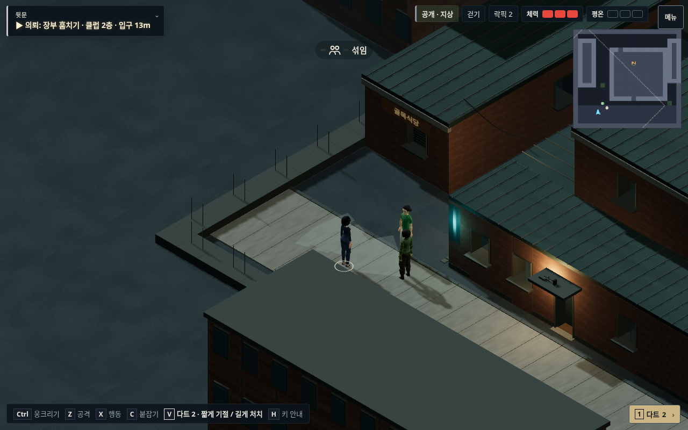
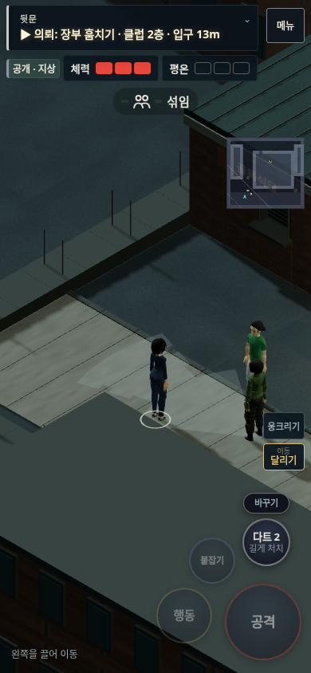

야행 · v129걷기 속도와 경비 시야
새 구역의 낮았던 이동 배율을 본편과 맞추고, 사선 시점에서 위아래 걸음이 짧게 보이던 차이를 보정했습니다. 이제 모든 방향에서 화면 이동 속도가 일정합니다. 경비의 경로 이동에도 같은 보정을 적용했습니다.
같은 입력으로 비교
가속 구간 뒤의 게임 시간 기준 px/s입니다. 카메라를 고정해 측정했으며, 실제 기기의 FPS 수치와는 다릅니다.
| 모바일 390×844 | 좌우 | 상하 | 대각선 |
|---|
| 기존 2D 본편 | 108 | 108 | 108 |
| 사선 v128 | 103 | 59 | 73 |
| 사선 v129 | 134 | 134 | 134 |
같은 회수·탈출 경로는 약 65초에서 48초로 줄었습니다. 낮은 표시 프레임에서도 게임 시간이 함께 느려지지 않도록 작은 충돌 단계로 나눠 진행합니다. 긴 멈춤·앱 전환·전술 지도에는 별도 제한을 적용합니다.
평상시에도 보이는 시야
경비를 선택하거나 의심 단계가 되어야만 보이던 표시를 바꿨습니다. 시야각·조도·벽 판정을 감지 로직과 공유하고, 지면에 표시해 건물과 지붕 위를 덮지 않게 했습니다. 정상적으로 지나가는 사람을 바라본다는 이유만으로 빨간색을 표시하지 않습니다.

모바일 화면

새 그래픽은 대표 구역 한 곳에 적용한 시제품입니다. 기존 2D 본편은 Cloudflare에서 v128 고정본으로 따로 제공됩니다. 실제 휴대폰의 성능 검증은 별도입니다.